第二部分 · Direct3D 基础
对应示例：Mirror Demo
本章学习目标（Objectives）
- 理解深度/模板缓冲的格式与模板测试的判定规则；
- 配置 DepthStencilState（含正反面差异化规则）；
- 用模板实现平面镜反射（只在镜面区域内显示倒影）；
- 用模板 + 几何技巧实现平面阴影，并解决"阴影双重着色（Double Blending）"。
模板缓冲（Stencil Buffer）像一个 8 位"遮罩画布"，可以让某些像素"只允许/不允许"写入——镜面倒影、阴影体、聚焦效果都靠它。这是第二部分的收官章。
11.1 深度/模板格式与清除（Depth/Stencil Formats and Clearing）
深度缓冲与模板缓冲通常共用一个资源（如 DXGI_FORMAT_D24_UNORM_S8_UINT：24 位深度 + 8 位模板），必须与交换链格式 D32/D24 兼容。清除用 ClearDepthStencilView（深度清 1.0 = 最远，模板清 0）。
11.2 模板测试（The Stencil Test）
每个像素片元都要过考试：(ref & mask) OP (value & mask)。OP 可为 <、≤、>、≥、==、≠、总是通过/总不通过。结果分支决定三种动作（StencilFunc 之外的可配置项）：
- 通过时（PassOp）怎么写缓冲（KEEP / INCR / DECR / REPLACE / ZERO…）；
- 深度测试失败时（DepthFailOp）怎么写；
- 模板测试失败时（FailOp）怎么写。
书中举例：用"模板参考值 < 缓冲值 → 不通过"实现先画 skull 之外区域、再画 skull 的分区绘制。
11.3 描述深度/模板状态（Describing the Depth/Stencil State）
D3D12_DEPTH_STENCIL_DESC 配置：深度开关、写入掩码、模板开关、正反面各自的 Func/Fail/Pass/DepthFail 规则。示例：
CD3DX12_DEPTH_STENCIL_DESC drawReflectionDesc(D3D12_DEFAULT); drawReflectionDesc.StencilEnable = true; drawReflectionDesc.StencilFunc = D3D12_COMPARISON_FUNC_EQUAL; drawReflectionDesc.StencilPassOp = D3D12_STENCIL_OP_INCR; // 通过则 +1 // 写镜面区域：模板通过规则 = EQUAL，参考值 0，通过后 REPLACE 为 1
11.4 平面镜实现（Implementing Planar Mirrors）
经典五步流水线（Mirror demo）：
- 画地板、墙壁、骷髅等不透明物，模板缓冲清 0；
- 画镜面：只写模板（深度测试仍开），把镜面覆盖的像素模板标记为 1（Replace），不写颜色；
- 画骷髅的倒影：用第 3 章"坐标系变换"构造镜像矩阵（关于镜面平面反射，同时把绕序反过来——反射让三角形朝向翻转，需换 CULL_FRONT）；模板规则设为"只允许在模板==1 的像素画"——倒影只能出现在镜子里；
- 倒影可以叠加半透明混合（alpha = 0.3 的"镜面反射强度"）；
- 最后画镜面玻璃本身（半透明淡蓝），模板规则"模板≠1 才画"或清除标记。
📌 朝向细节：反射矩阵 det < 0，三角形绕序翻转 → 画倒影时要切换背面剔除方向或用负缩放修正——书里专门用图讲了这个"为什么倒影会消失"的经典 bug。
11.5 平面阴影实现（Implementing Planar Shadows）
把物体压扁投影到平面上形成假阴影：构造"投影到地面"的矩阵（平行光或点光源），再乘一个把 y 压到地面高度 + ε 的矩阵，用半透明黑色材质画一遍即可。要点：
- n·L < 0 的数值问题 → 加深度偏移/剪裁避免把"影子画上天"；
- 双重混合（Double Blending）：多个三角形投影到同一像素，半透明黑叠加两遍 = 一块深一块浅。解法：用模板测试让同一像素只被阴影写一次（画阴影时 INCR，比较规则 == 允许只写一次）；
- 局限：只能投到平面，无法投到起伏地形——那是第 20 章阴影贴图的任务。
💡 读完做实验：把倒影 alpha 调到 1（不透明镜子）；再加一个物体同时看倒影和影子；故意关掉背面修正看倒影"消失"的效果。
本章小结
- 模板缓冲 = 逐像素 8 位遮罩；测试 = 参考值 OP 缓冲值，三分支决定写法。
- 镜面倒影 = 镜面标模板 → 反射矩阵画物体（限定模板区域）→ 画玻璃。
- 反射翻转绕序，注意剔除方向；阴影压扁投影注意双重混合，用模板去重。
- 第二部分完：现在你能画出 有光照、有纹理、有透明、有镜子和影子的场景了。
🖼️ 原书插图（13 张，点击展开）
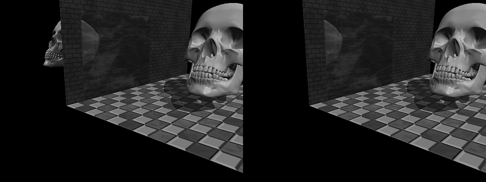
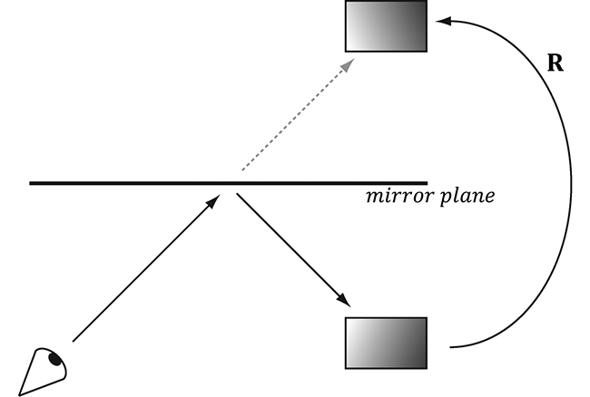
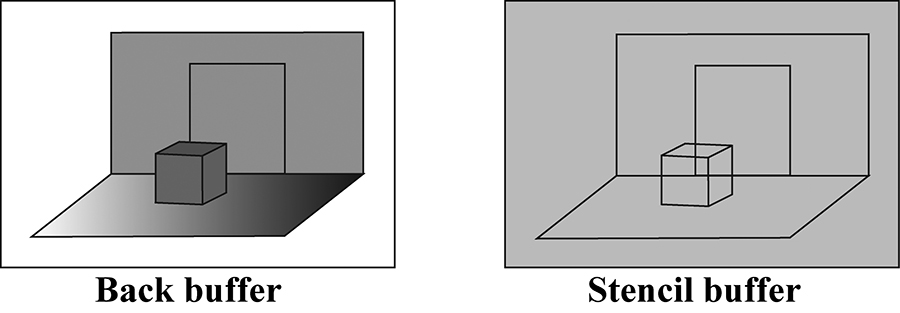
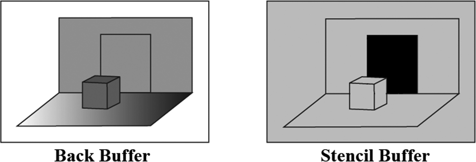
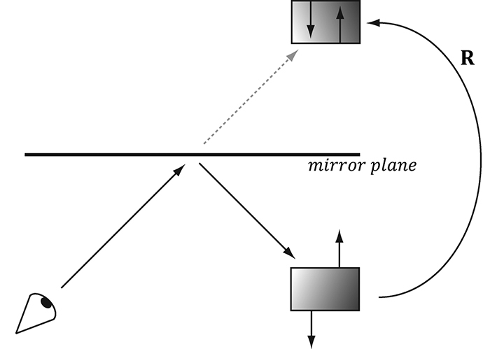
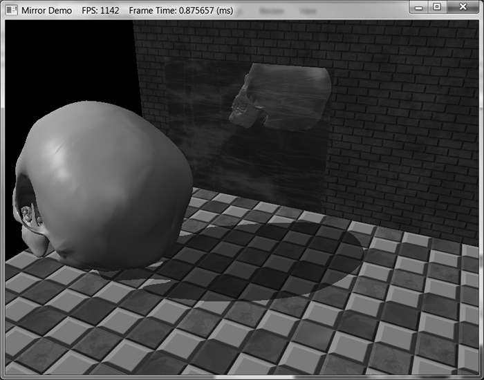
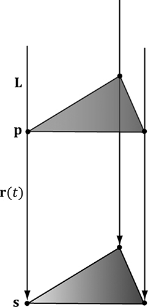
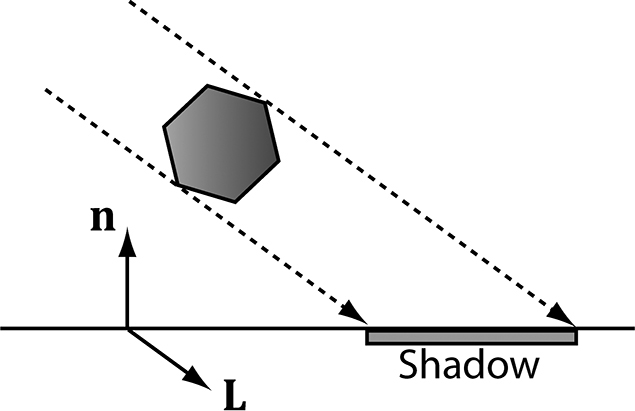
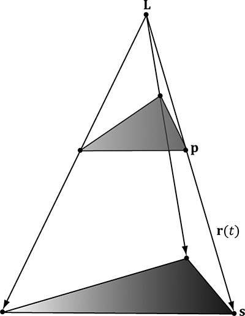
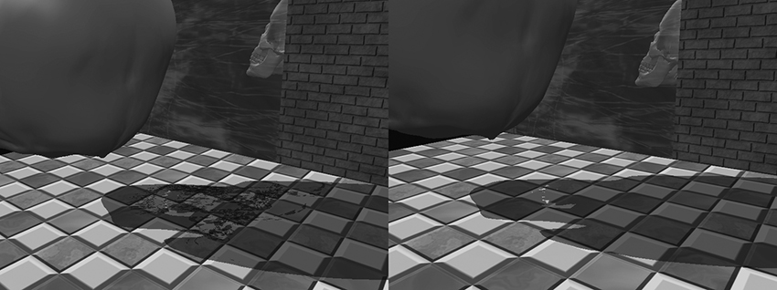
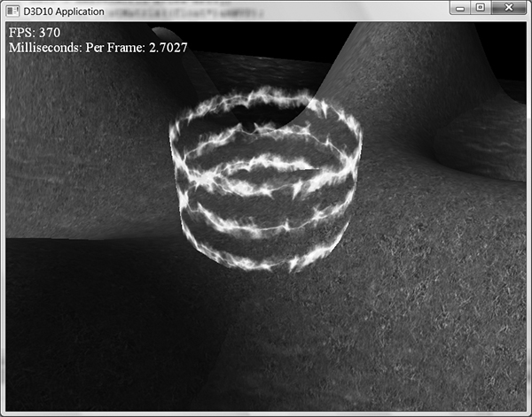
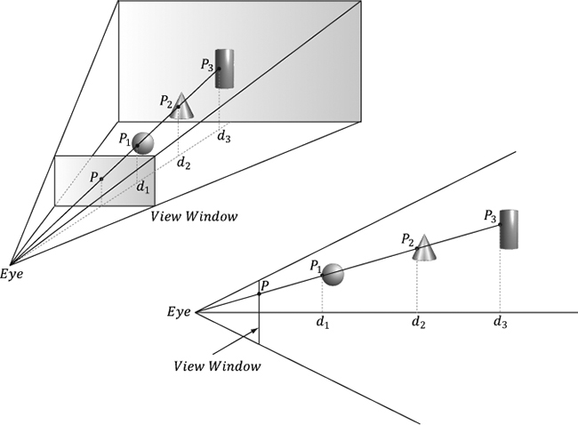
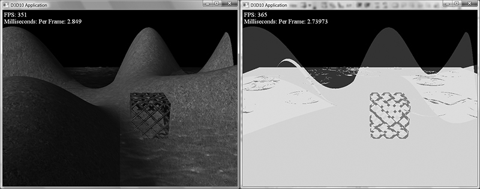